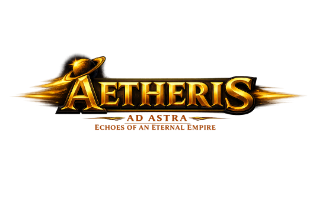

C:\ORCA\HUB> whoami --games
MC ORCA GAMES
Browserbasierte Weltraumspiele. Kein Download, kein Konto bei Dritten — einfach oeffnen und spielen.
[ ⟳ ] SYNC-STATUS.SYSwird geprüft …
# Lokaler Spielstand vs. Cloud, pro Spiel. Bei Unterschied: Button oeffnet das Spiel + Cloud-Panel dort.
[ 01 ] AETHERIS.EXEv1.0 · Release
Weltraum-Imperium

> Gruende eine Kolonie, baue eine Flotte auf und handle mit Dunkler Materie — in einer Galaxie, die sich weiterdreht, auch wenn du gerade nicht online bist.
[ 02 ] PATH_OF_THE_STARS.EXEv0.0243 · Open Beta
Generationenschiff-Saga
> Die Sonne stirbt. Die Erde flieht — handle zwischen den Sternen und verfolge ein uraltes Signal, waehrend an Bord nur Jahre vergehen und draussen Jahrtausende verstreichen.
[ 03 ] ASTRION.EXEOpen Beta
Sammelkarten-Universum
> Oeffne Booster, sammle Karten aus vier Voelkern und tritt in der Sternen-Akademie an — ein entspanntes Sammelkartenspiel, das nebenbei Deutsch und Mathe uebt.
[ 04 ] ANCHOR.EXEOpen Beta
Satelliten-Simulation
> Baue Satelliten vom ersten Chassis bis zur fertigen Konstellation und expandiere von der Erdumlaufbahn bis in fremde Sonnensysteme und Galaxien.